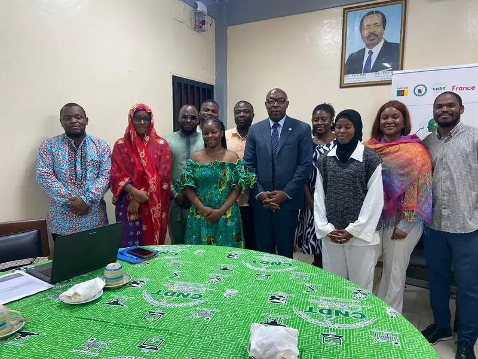
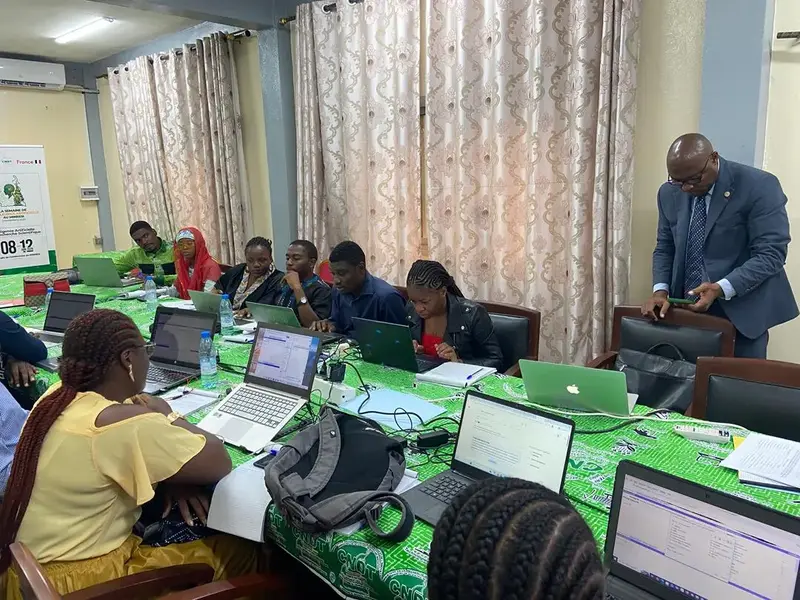
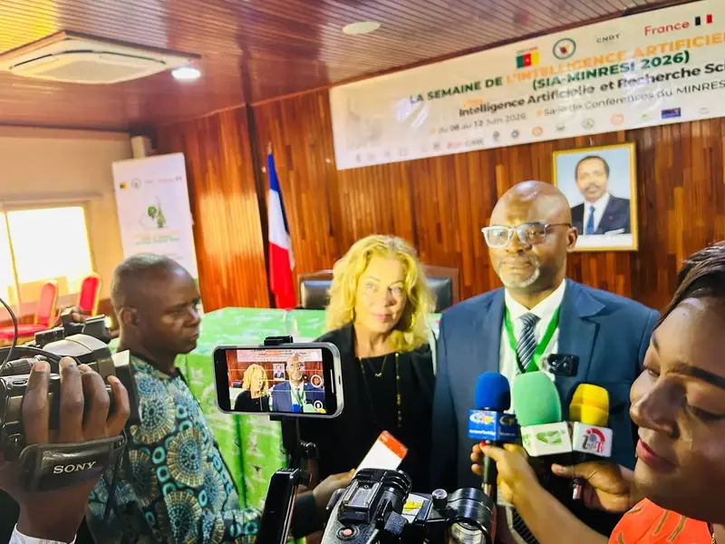

Présentation
La Plateforme nationale de veille technologique est un dispositif numérique conçu pour collecter, analyser et diffuser l'information scientifique et technique relative aux technologies émergentes, afin d'éclairer la décision publique et d'accompagner les acteurs économiques camerounais.
Porté par le Secrétariat 01 (TIC & IA) du CNDT, le projet s'inscrit dans la mission nationale de veille et de transfert technologique. Il vise à combler un déficit d'information structurée sur les innovations numériques et leur impact sectoriel.
Contexte & enjeux
Le Cameroun fait face à une accélération des cycles d'innovation technologique (intelligence artificielle, cloud, objets connectés, blockchain…) sans disposer d'un outil unifié de suivi et d'analyse prospective.
- Absence de tableau de bord national sur les technologies émergentes.
- Faible mutualisation de la veille entre administrations et instituts de recherche.
- Besoins croissants des PME et start-up en matière d'orientation technologique.
- Nécessité d'aligner la veille avec les priorités de la SND30.
Objectifs
Objectif général
Doter le Cameroun d'une plateforme nationale de veille technologique qui centralise, analyse et diffuse l'information scientifique et technique utile à la décision publique et à l'innovation économique.
Objectifs spécifiques
- Cartographier les sources d'information scientifiques et techniques fiables.
- Développer un moteur de collecte automatisée et de qualification des données.
- Produire des notes d'analyse sectorielles trimestrielles.
- Former les administrations à l'usage de la plateforme.
- Assurer une diffusion grand public via un portail web dédié.
Méthodologie
L'approche repose sur un cycle itératif : collecte → qualification → analyse → diffusion → retour d'expérience, conduit en concertation avec les parties prenantes.
Galerie
Retour en images sur les étapes clés du projet.




Rapports & documents
Retrouvez ci-dessous les documents officiels produits dans le cadre du projet.
-
Rapport de cadrage — Phase 1Télécharger
Définition des périmètres, indicateurs et sources du projet.